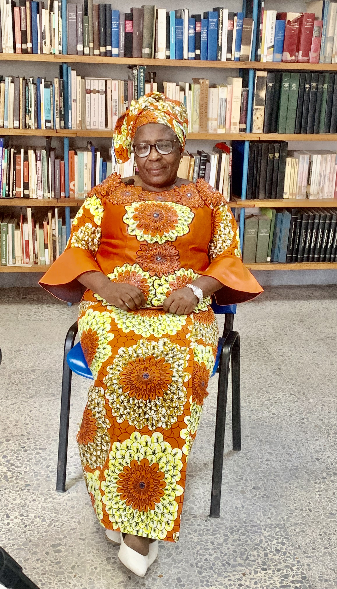
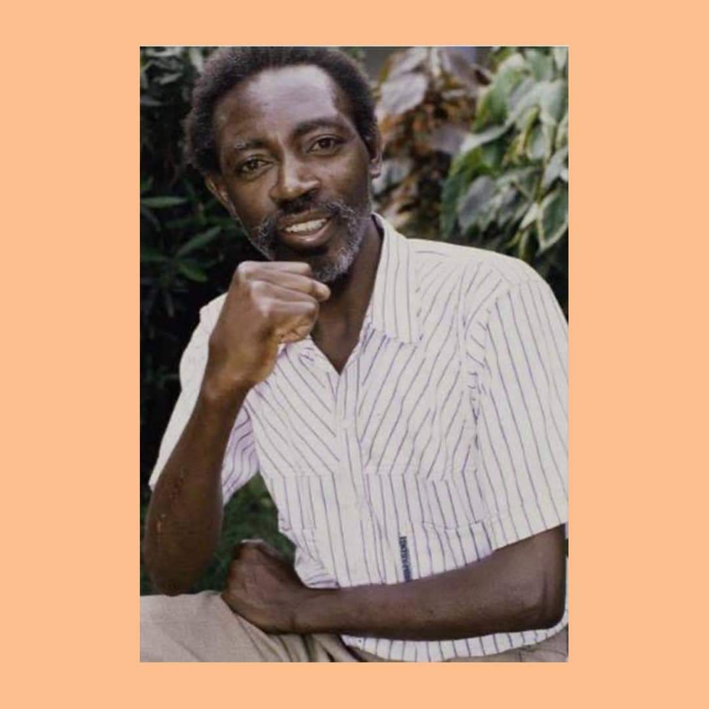
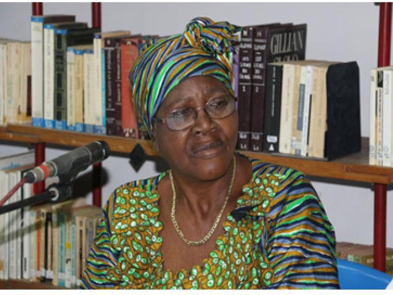
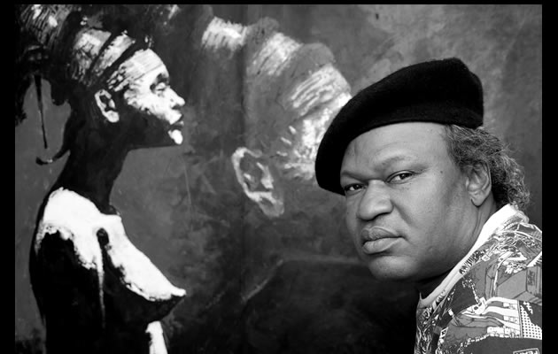
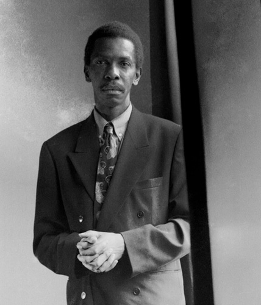

Rencontres & parcours
Les voix qui
font vivre nos récits.
Écrivains, poètes et conteurs : découvrez les parcours et les univers qui façonnent la littérature congolaise.
Rencontrer les auteursAuteurs à découvrir
Des parcours singuliers
Des écritures, des rythmes et des regards qui ouvrent de nouvelles portes sur le Congo.
20 portraits en lumière
Le répertoire Mikanda
Parcourez les portraits et découvrez les univers de chaque auteur.
20 auteurs à découvrir
20 portraits en lumière

Poète et romancier
Fiston Mwanza Mujila
Une langue inventive, traversée par le rythme et la poésie.
Voir le portrait
Romancier
In Koli Jean Bofane
Un regard singulier sur le Congo et le monde contemporain.
Voir le portrait
Poète et conteur
Kama Sywor Kamanda
Des poèmes et récits inspirés par les imaginaires africains.
Voir le portraitPhilosophe et écrivain
V. Y. Mudimbe
Une œuvre singulière au croisement de la philosophie, de l’essai et du roman.
Voir le portraitÉcrivain et conteur
Zamenga Batukezanga
Des récits attentifs aux réalités sociales et aux voix du quotidien.
Voir le portraitPoète et linguiste
Clémentine Faïk-Nzuji
Une poésie nourrie par les langues et les traditions orales congolaises.
Voir le portrait
Écrivaine
Marie-Eugénie Mpongo
Une plume qui explore les expériences et les imaginaires de son époque.
Voir le portrait
Écrivain et critique littéraire
Georges Ngal
Des œuvres qui interrogent les formes du roman et les héritages culturels.
Voir le portraitRomancière
Maguy Kabamba
Des histoires ancrées dans les parcours et les réalités congolaises.
Voir le portrait
Écrivaine
Élisabeth Mweya Tol’Ande
Une voix contemporaine qui invite à découvrir de nouveaux récits.
Voir le portraitÉcrivain et poète
Christian Gombo
Une écriture vivante où se rencontrent poésie, humour et observation.
Voir le portraitÉcrivaine
Marie-Justine Kalunga
Des textes qui font entendre une voix nouvelle de la littérature congolaise.
Voir le portraitÉcrivaine et poète
Joëlle Sambi
Une parole libre qui traverse les genres et questionne les frontières.
Voir le portraitÉcrivain et dramaturge
Lye Yoka
Une œuvre attentive aux voix, aux scènes et aux cultures de Kinshasa.
Voir le portraitÉcrivain et universitaire
Mukala Kadima-Nzuji
Un parcours consacré à la création et à l’histoire littéraire africaine.
Voir le portraitÉcrivain et universitaire
Pius Ngandu Nkashama
Des romans et des essais qui explorent l’histoire et les sociétés africaines.
Voir le portraitÉcrivain et artiste
Sinzo Aanza
Des récits contemporains qui croisent littérature, art et société.
Voir le portrait
Auteur de bande dessinée
Barly Baruti
Un auteur qui fait vivre les imaginaires congolais en images.
Voir le portrait
Écrivain et journaliste
Désiré Bolya Baenga
Des romans portés par un regard critique sur les sociétés contemporaines.
Voir le portraitProlongez la découverte
Retrouvez les œuvres dans la bibliothèque.
Parcourez le catalogue et laissez-vous guider vers votre prochaine lecture.